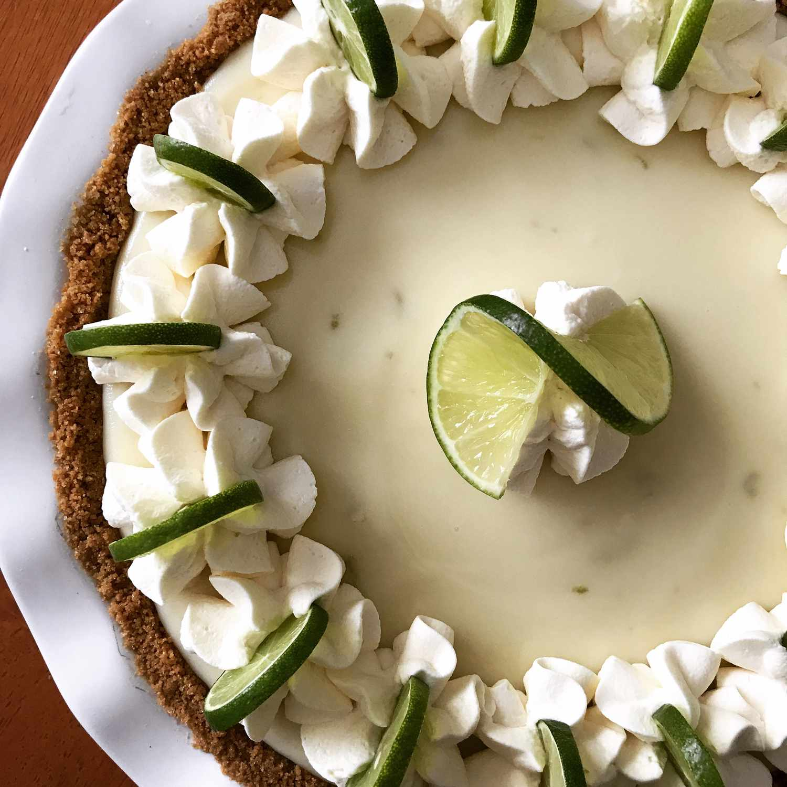

Key Lime Pie
Key Lime Pie is a Florida staple. It is a light, fruity pie made of key lime juice, condensed milk and sour cream that creates a perfect summer dessert.
 

Ingredients
4 teaspoons grated key lime zest
4 egg yolks
14 ounces sweetened condensed milk
½ cup (114 g) fresh key lime juice
2 cups (200 g) graham cracker crumbs, (approximately 14 full graham crackers)
⅓ cup (71 g) light brown sugar
½ cup (113 g) unsalted butter, melted
Pinch of Salt
1½ cups (360 ml) heavy cream, chilled
½ cup (57 g) powdered sugar
½ teaspoon vanilla extract
Recipe
1. Preheat oven to 350 degrees F.
2. Make the Filling: Whisk the lime zest and egg yolks in a medium bowl for 2 minutes. Whisk in the sweetened condensed milk, then the lime juice. Set aside at room temperature to thicken while you prepare the crust.
3. Make the Crust: In a medium bowl, stir together the graham cracker crumbs, brown sugar, and salt, ensuring no lumps of brown sugar remain. Drizzle the melted butter over the graham cracker mixture and toss to combine with a fork, ensuring the mixture is evenly moistened. Press the crust mixture evenly into the bottom and sides of a 9-inch pie plate, and pack tightly using the back of a measuring cup. Bake for 10 minutes; transfer to a wire rack to cool to room temperature.
4. Once the crust has cooled to room temperature, pour the lime filling into the crust. Bake until the center is set yet still wiggly when jiggled, 15 to 17 minutes. Return the pie to a wire rack; cool to room temperature. Refrigerate until well-chilled, at least 3 hours, or overnight.
5. Make the Whipped Cream: Using an electric mixer, whip the cream on medium speed until soft peaks form. At this point, add the powdered sugar, a small amount at a time, then the vanilla extract, while continuing to whip the cream until stiff peaks form. Decoratively pipe the whipped cream over the filling or spread the whipped cream evenly with a spatula. Garnish with lime slices, if desired, and serve. Cover leftovers with plastic wrap and refrigerate for up to 3 days.
Source: Brown Eyed Baker
Sallys Baking Addiction
What I like about this website is how the pictures make it easy to follow the recipe. Additionally, the jump to recipe button is extremely convenient to avoid the blog like aspect and just get to the recipe.
Food Network
I like the layout of the food network page because the steps are clearly differentiated and the ingredients are on the side. This is convenient, because if looking at a computer while baking it can be extremely difficult to scroll.
Pure Wow
I chose this website simply because I think it has a very attractive aesthetic. The font and placement are very clean and fitting with the baking theme.
Andy Warhol
I really like how Andy Warhols website utilizes layout. The formatting of having an image on one side and text on the other and then reversing it to create a checkerboard effect of sorts works very nicely.
Aritzia
What I like about Artizias website is that all images use the same color scheme for their background. This creates a very cohesive look. This may be hard for my website, but if possible, this is an aesthetic I would love to replicate.
Goldbelly
Goldbelly features a bright color scheme, which I feel works well with food. On a recipe page, a bright color scheme makes the task of baking seem more fun and exciting.